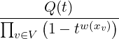

| Up | Next | Prev | PrevTail | Tail |
Key words: affine and projective monomial curves, affine and projective sets of points, analytic spread, associated graded ring, blowup, border bases, constructive commutative algebra, dual bases, elimination, equidimensional part, extended Gröbner factorizer, free resolution, Gröbner algorithms for ideals and module, Gröbner factorizer, ideal and module operations, independent sets, intersections, lazy standard bases, local free resolutions, local standard bases, minimal generators, minors, normal forms, pfaffians, polynomial maps, primary decomposition, quotients, symbolic powers, symmetric algebra, triangular systems, weighted Hilbert series, primality test, radical, unmixed radical.
This package contains algorithms for computations in commutative algebra closely related to the Gröbner algorithm for ideals and modules. Its heart is a new implementation of the Gröbner algorithm1 that allows the computation of syzygies, too. This implementation is also applicable to submodules of free modules with generators represented as rows of a matrix.
Moreover CALI contains facilities for local computations, using a modern implementation of Mora’s standard basis algorithm, see [MPT92] and [Grä94b], that works for arbitrary term orders. The full analogy between modules over the local ring k[xv : v ∈ H]m and homogeneous (in fact H-local) modules over k[xv : v ∈ H] is reflected through the switch . Turn it on (Gröbner basis, the default) or off (local standard basis) to choose appropriate algorithms automatically. In v. 2.2 we present an unified approach to both cases, using reduction with bounded ecart for non Noetherian term orders, see [Grä95a] for details. This allows to have a common driver for the Gröbner algorithm in both cases.
CALI extends also the restricted term order facilities of the GROEBNER package, defining term orders by degree vector lists, and the rigid implementation of the sugar idea, by a more flexible ecart vector, in particular useful for local computations, see [Grä94b].
The package was designed mainly as a symbolic mode programming environment extending the build-in facilities of REDUCE for the computational approach to problems arising naturally in commutative algebra. An algebraic mode interface accesses (in a more rigid frame) all important features implemented symbolically and thus should be favored for short sample computations.
On the other hand, tedious computations are strongly recommended to be done symbolically since this allows considerably more flexibility and avoids unnecessary translations of intermediate results from CALI’s internal data representation to the algebraic mode and vice versa. Moreover, one can easily extend the package with new symbolic mode scripts, or do more difficult interactive computations. For all these purposes the symbolic mode interface offers substantially more facilities than the algebraic one.
For a detailed description of special symbolic mode procedures one should consult the source code and the comments therein. In this manual we can give only a brief description of the main ideas incorporated into the package CALI. We concentrate on the data structure design and the description of the more advanced algorithms. For sample computations from several fields of commutative algebra the reader may consult also the cali.tst file.
As main topics CALI contains facilities for
Below we will use freely without further explanation the notions common for text books and papers about constructive commutative algebra, assuming the reader to be familiar with the corresponding ideas and concepts. For further references see e.g. the text books [BWK93], [CLO92] and [Mis93] or the survey papers [Buc85], [Buc88] and [Rob89].
CALI should be loaded via
Upon successful loading CALI responds with a message containing the version number and the last update of the distribution.
From a certain point of view one of the major disadvantage of the current RLISP (and the underlying Lisp) language is the fact that it supports modularity and data encapsulation only in a rudimentary way. Since all parts of code loaded into a session are visible all the time, name conflicts between different packages may occur, will occur (even not issuing a warning message), and are hard to prevent, since packages are developed (and are still developing) by different research groups at different places and different time.
A (yet rudimentary) concept of REDUCE packages and modules indicates the direction into what the REDUCE designers are looking for a solution for this general problem.
CALI (2.0 and higher) follows a name concept for internal procedures to mimick data encapsulation at a semantical level. We hope this way on the one hand to resolve the conflicts described above at least for the internal part of CALI and on the other hand to anticipate a desirable future and already foregoing development of REDUCE towards a true modularity.
The package CALI is divided into several modules, each of them introducing either a single new data type together with basic facilities, constructors, and selectors or a collection of algorithms subject to a common problem. Each module contains internal procedures, conceptually hidden by this module, local procedures, designed for a CALI wide use, and global procedures, exported by CALI into the general (algebraic or symbolic) environment of REDUCE. A header module cali contains all (fluid) global variables and switches defined by the package CALI.
Along these lines the CALI procedures available in symbolic mode are divided into three types with the following naming convention:
There are also symbolic mode equivalents without trailing asterisk, if the algebraic procedure is not a psopfn, but a symbolic operator. They transfer data to CALI’s internal structure and call the corresponding procedure with trailing asterisk. CALI 2.2 distinguishes between algebraic and symbolic calls of such a procedure. In symbolic mode such a procedure calls the corresponding procedure with trailing asterisk directly without data transfer.
CALI 2.2 follows also a more concise concept for global variables. There are three types of them:
This section gives a short introduction into the data type design of CALI at different levels. First (§1 and 2) we describe CALI’s way of algorithmic translation of the abstract algebraic objects ring of polynomials, ideal and (finitely generated) module. Then (§3 and 4) we describe the algebraic mode interface of CALI and the switches and global variables to drive a session. In the next chapter we give a more detailed overview of the basic (symbolic mode) data structures involved with CALI. We refer to the appendix for a short summary of the commands available in algebraic mode.
A polynomial ring consists in CALI of the following data:
A base ring may be defined (in algebraic mode) through the command
with ⟨ring⟩ ::= { vars, tord, tag [, ecart ] } resp.
This sets the global (symbolic) variable cali!=basering. Here vars is the list of variable names, tord a (possibly empty) list of weight lists, the degree vectors, and tag the tag LEX or REVLEX. Optionally one can supply ecart, a list of positive integers of the same length as vars, to set an ecart vector different from the default one (see below).
The degree vectors must have the same length as vars. If (w1 … wk) is the list of degree vectors then
| xa < xb | :⇔ | either | wj(xa) = wj(xb) | for j < i | and |
| wi(xa) < wi(xb) | |||||
| or | wj(xa) = wj(xb) | for all j | and | ||
| xa < lexxb resp. xa < revlexxb
| |||||
Here < lex resp. < revlex denote the lexicographic (tag=LEX) resp. reverse lexicographic (tag=REVLEX) term orders2 with respect to the variable order given in vars, i.e.
| xa < xb :⇔ ∃ j ∀ i < j : a i = bi and aj < bj (lex.) |
or
| xa < xb :⇔ ∃ j ∀ i > j : a i = bi and aj > bj (revlex.) |
Every term order can be represented in such a way, see [MR88].
During the ring setting the term order will be checked to be Noetherian (i.e. to fulfill the descending chain condition) provided the switch is on (the default). The same applies turning noetherian on: If the term order of the underlying base ring isn’t Noetherian the switch can’t be turned over. Hence, starting from a non Noetherian term order, one should define first a new ring and then turn the switch on.
Useful term orders can be defined by the procedures
that returns tord = {{1,…,1}}.
that returns tord = {{−1,…,−1}} (a non Noetherian term order for computations in local rings).
that returns a term order for elimination of the variables in ⟨elimvars⟩, a subset of all ⟨vars⟩. It’s recommended to combine it with the tag revlex.
that returns the list of degree vectors for the block order with block lengths given in the ⟨integerlist⟩. Note that these numbers should sum up to the length of the variable list supplied as the first argument.
Examples:
The base ring is initialized with
i.e. S = k[t,x,y,z] supplied with the degreewise reverse lexicographic term order.
returns the ring attached to the object with the identifier ⟨m⟩. E.g.,
(re)sets the base ring to the base ring of the formerly defined object (ideal or module) ⟨m⟩.
returns the currently active base ring.
CALI defines also an ecart vector, attaching to each variable a positive weight with respect to that homogenizations and related algorithms are executed. It may be set optionally by the user during the setring command. (Default: If the term order is a (positive) degree order then the ecart is the first degree vector, otherwise each ecart equals 1).
The ecart vector is used in several places for efficiency reason (Gröbner basis computation with the sugar strategy) or for termination (local standard bases). If the input is homogeneous the ecart vector should reflect this homogeneity rather than the first degree vector to obtain the best possible performance. For a discussion of local computations with encoupled ecart vector see [Grä94b]. In general the ecart vector is recommended to be chosen in such a way that the input examples become close to be homogeneous. Homogenizations and Hilbert series are computed with respect to this ecart vector. getecart() returns the ecart vector currently set.
If S = k[xv, v ∈ H] is a polynomial ring, a matrix M of size r × c defines a map
| f : Sr→Sc |
by the following rule
| f(v) := v ⋅ M for v ∈ Sr. |
There are two modules, connected with such a map, im f, the submodule of Sc generated by the rows of M, and cokerf (= Sc∕im f). Conceptually we will identify M with im f for the basic algebra, and with cokerf for more advanced topics of commutative algebra (Hilbert series, dimension, resolution etc.) following widely accepted conventions.
With respect to a fixed basis {e1,…,ec} one can define module term orders on Sc, Gröbner bases of submodules of Sc etc. They generalize the corresponding notions for ideal bases. See [Eis95] or [MM86] for a detailed introduction to this area of computational commutative algebra. This allows to define joint facilities for both ideals and submodules of free modules. Moreover computing syzygies the latter come in in a natural way.
CALI handles ideal and module bases in a unique way representing them as rows of a dpmat (distributive polynomial matrix). It attaches to each unit vector ei a monomial xai, the i-th column degree and represents the rows of a dpmat M as lists of module terms xaei, sorted with respect to a module term order, that may be roughly3 described as
| xaei < xbej | :⇔ | either | xaxai < xbxaj in S |
| or | xaxai = xbxaj | ||
| and | |||
| i < j (lex.) resp. i > j (revlex.) | |||
Every dpmat M has its own column degrees (no default !). They are managed through a global (symbolic) variable cali!=degrees.
returns the column degrees of the object with identifier ⟨m⟩.
returns the current setting of cali!=degrees.
sets cali!=degrees correspondingly. Use this command before executing setmodule to give a dpmat prescribed column degrees since cali!=degrees has no default value and changes during computations. A good guess is to supply the empty list (i.e. all column degrees are equal to x0). Be careful defining modules without prescribed column degrees.
To distinguish between ideals and modules the former are represented as a dpmat with c = 0 (and hence without column degrees). If I ⊂ S is such an ideal one has to distinguish between the ideal I (with c = 0, allowing special ideal operations as e.g. ideal multiplication) and the submodule I of the free one dimensional module S1 (with c = 1, allowing matrix operations as e.g. transposition, matrix multiplication etc.). ideal2mat converts an (algebraic) list of polynomials into an (algebraic) matrix column whereas mat2list collects all matrix entries into a list.
Corresponding to CALI’s general philosophy explained in the introduction the algebraic mode interface translates algebraic input into CALI’s internal data representation, calls the corresponding symbolic functions, and retranslates the result back into algebraic mode. Since Gröbner basis computations may be very tedious even on small examples, one should find a well balance between the storage of results computed earlier and the unavoidable time overhead and memory request associated with the management of these results.
Therefore CALI distinguishes between free and bounded identifiers. Free identifiers stand only for their value whereas to bounded identifiers several internal information is attached to their property list for later use.
After the initialization of the base ring bounded identifiers for ideals or modules should be declared via
resp.
This way the corresponding internal representation (as dpmat) is attached to ⟨name⟩ as the property basis, the prefix form as its value and the current base ring as the property ring.
Performing any algebraic operation on objects defined this way their ring will be compared with the current base ring (including the term order). If they are different an error message occurs. If m is a valid name, after resetting the base ring
reevaluates m with respect to the new base ring (since the value of m is its prefix form) and assigns the reordered dpmat to m1 clearing all information previously computed for m1 (m1 and m may coincide).
All computations are performed with respect to the ring S = k[xv ∈vars] over the field k. Nevertheless by efficiency reasons base coefficients are represented in a denominator free way as standard forms. Hence the computational properties of the base coefficient domain depend on the dmode and also on auxiliary variables, contained in the expressions, but not in the variable list. They are assumed to be parameters.
Best performance will be obtained with integer or modular domain modes, but one can also try Algebraic numbers as coefficients as e.g. generated by sqrt or the ARNUM package. To avoid an unnecessary slow-down connected with the management of simplified algebraic expressions there is a switch hardzerotest (default: off) that may be turned on to force an additional simplification of algebraic coefficients during each zero test. It should be turned on only for domain modes without canonical representations as e.g. mixtures of arnums and square roots. We remind the general zero decision problem for such domains.
Alternatively, CALI offers the possibility to define a set of algebraic substitution rules that will affect CALI’s base coefficient arithmetic only.
transfers the (algebraic) ⟨rule list⟩ into the internal representation stored at the cali value rules.
In particular, setrules {} clears the rules previously set.
returns the internal CALI rules list in algebraic form.
We recommend to use setrules for computations with algebraic numbers since they are better adapted to the data structure of CALI than the algebraic numbers provided by the ARNUM package. Note, that due to the zero decision problem complicated setrules based computations may produce wrong results if base coefficient’s pseudo division is involved (as e.g. with dp_pseudodivmod). In this case we recommend to enlarge the variable set and add the defining equations of the algebraic numbers to the equations of the problem4 .
The standard domain (Integer) doesn’t allow denominators for input. setideal clears automatically the common denominator of each input expression whereas a polynomial matrix with true rational coefficients will be rejected by setmodule.
One can save/initialize ideal and module bases together with their accompanying data (base ring, degrees) to/from a file:
resp.
execute the file transfer from/to disk files with the specified file ⟨name⟩. e.g.
saves the base ring and the ideal basis of m to the file “myfile” whereas
sets the current base ring (via a call to setring) to the base ring of m saved at “myfile” and then recovers the basis of m from the same file.
There are several switches, (fluid) global variables, a trace facility, and global parameters on the property list of the package name cali to control CALI’s computations.
Affects only local computations.
Affects only local computations.
Off: choose algorithms for local term orders.
Off: Do only top reduction.
Different to v. 2.1 now intermediate output during the computations is controlled by the value of the trace and printterms entries on the property list of the package name cali. The former value controls the intensity of the intermediate output (Default: 0, no tracing), the latter the number of terms printed in such intermediate polynomials (Default: all).
Changes the trace intensity. Set n = 2 for a sparse tracing (a dot for each reduction step). Other good suggestions are the values 30 or 40 for tracing the Gröbner algorithm or n > 70 for tracing the normal form algorithm. The higher n the more intermediate information will be given.
Sets the number of terms that are printed in intermediate polynomials. Note that this does not affect the output of whole dpmats. The output of polynomials with more than n terms (n > 0) breaks off and continues with ellipses.
Clears the printterms value forcing full intermediate output (according to the current trace level).
This approach is new for v. 2.2. Information concerning the state of the computational model as e.g. trace intensity, base coefficient rules, or algorithm versions are stored as values on the property list of the identifier (package name) cali. This concerns
see above.
Reduction function invoked during the Gröbner algorithm. It can be changed with gbtestversion < n > (n = 1,2,3, default is 1).
Variant for the computation of the Hilbert series numerator. It can be changed with hftestversion < n > (n = 1,2, default is 1).
Algebraic “replaceby” rules introduced to CALI with the setrules command.
In the following we describe the data structure layers underlying the dpmat representation in CALI and some important (symbolic) procedures to handle them. We refer to the source code and the comments therein for a more complete survey about the procedures available for different data types.
Base coefficients as implemented in the module bcsf are standard forms in the variables outside the variable list of the current ring. All computations are executed "denominator free" over the corresponding quotient field, i.e. gcd’s are canceled out without request. To avoid this set the bcsimp off.5 In the given implementation we use the s.f. procedure qremf for effective divisibility test. We had some trouble with it under on factor.
Additionally it is possible to supply the parameters occuring as base coefficients with a (global) set of algebraic rules.6
converts an algebraic mode rules list r as e.g. used in WHERE statements into the internal CALI format.
The base ring is defined by its name list, the degree matrix (a list of lists of integers), the ring tag (LEX or REVLEX), and the ecart. The name list contains a phantom name cali!=mk for the module component at place 0.
The module ring exports among others the following selectors: ring_names, ring_degrees, ring_tag, ring_ecart, the symbolic mode test function ring_isnoetherian and the transfer procedures from/to an (appropriate, printable by mathprint) algebraic prefix form ring_from_a (including extensive tests of the supplied parameters for consistency) and ring_2a.
The following procedures allow to define a base ring:
combines the given parameters to a ring.
sets cali!=basering and checks for consistency with the Noetherian. It also sets through setkorder the current variable list as main variables. It is strongly recommended to use setring!* … instead of cali!=basering := ….
The procedures degreeorder!* , localorder!*, eliminationorder!*, and blockorder!* define term order matrices in full analogy to algebraic mode.
There are three ring constructors for special purposes:
returns a ring, that is constructed in the following way: Its variable list is the union of the (disjoint) lists of the variables of the rings ⟨a⟩ and ⟨b⟩ (in this order) whereas the degree list is the union of the (appropriately shifted) degree lists of ⟨b⟩ and ⟨a⟩ (in this order). The ring tag is that of ⟨a⟩. Hence it returns (essentially) the ring b⊕ a if b has a degree part (e.g. useful for elimination problems, introducing “big” new variables) and the ring a⊕ b if b has no degree part (introducing “small” new variables).
⟨u⟩ is a subset of the names of the ring ⟨r⟩. Returns the ring ⟨r⟩, but with a term order “first degrevlex on ⟨u⟩, then the order on ⟨r⟩”.
As ring_rlp, but with a term order “first lex on ⟨u⟩, then the order on ⟨r⟩”.
Example:
The current version uses a place-driven exponent representation closely related to a vector model. This model handles term orders on S and module term orders on Sc in a unique way. The zero component of the exponent list of a monomial contains its module component (> 0) or 0 (ring element). All computations are executed with respect to a current ring (cali!=basering) and current (monomial) weights of the free generators ei,i = 1,…,c, of Sc (cali!=degrees). For efficiency reasons every monomial has a precomputed degree part that should be reevaluated if cali!=basering (i.e. the term order) or cali!=degrees were changed. cali!=degrees contains the list of column degrees of the current module as an assoc. list and will be set automatically by (almost) all dpmat procedure calls. Since monomial operations use the degree list that was precomputed with respect to fixed column degrees (and base ring)
watch carefully for cali!=degrees programming at the monomial or dpoly level !
As procedures there are selectors for the module component, the exponent and the degree parts, comparison procedures, procedures for the management of the module component and the degree vector, monomial arithmetic, transfer from/to prefix form, and more special tools.
CALI uses a distributive representation as a list of terms for both polynomials and polynomial vectors, where a term is a dotted pair
(⟨monomial⟩.⟨base coefficient⟩)
The ecart of a polynomial (vector) f = ∑ ti with (module) terms ti is defined as
| max(ec(ti)) − ec(lt(ti)), |
see [Grä94b]. Here ec(ti) denotes the ecart of the term ti, i.e. the scalar product of the exponent vector of ti (including the monomial weight of the module generator) with the ecart vector of the current base ring.
As procedures there are selectors, dpoly arithmetic including the management of the module component, procedures for reordering (and reevaluating) polynomials wrt. new term order degrees, for extracting common base coefficient or monomial factors, for transfer from/to prefix form and for homogenization and dehomogenization (wrt. the current ecart vector).
Two advanced procedures use ideal theory ingredients:
returns a dpoly list {q,r,z} such that z ⋅g = q ⋅f + r and z is a dpoly unit (i.e. a scalar for Noetherian term orders). For non Noetherian term orders the necessary modifications are described in [Grä95a].
g,f and r belong to the same free module or ideal.
computes the gcd of two dpolys a and b by the syzygy method: The syzygy module of {a,b} is generated by a single element [−b0 a0] with a = ga0,b = gb0, where g is the gcd of a and b. Since it uses dpoly pseudodivision it may work not properly with setrules.
Ideal bases are one of the main ingredients for dpmats. They are represented as lists of base elements and contain together with each dpoly entry the following information:
The representation part is managed during normal form computations and other row arithmetic of dpmats appropriately with the following procedures:
sets the relation part of the base element i in the base list ⟨b⟩ to ei.
removes all relations, i.e. replaces them with the zero polynomial vector.
Further there are procedures for selection and construction of base elements and for the manipulation of lists of base elements as e.g. sorting, renumbering, reordering, simplification, deleting zero base elements, transfer from/to prefix form, homogenization and dehomogenization.
Ideals and matrices, represented as dpmats, are the central data type of the CALI package, as already explained above. Every dpmat m combines the following information:
The module dpmat contains selectors, constructors, and the algorithms for the basic management of this data structure as e.g. file transfer, transfer from/to algebraic prefix forms, reordering, simplification, extracting row degrees and leading terms, dpmat matrix arithmetic, homogenization and dehomogenization.
The modules matop and quot collect more advanced procedures for the algebraic management of dpmats.
In v. 2.2 minors, Jacobian matrix, and Pfaffians are available for general REDUCE matrices. They are collected in the module calimat and allow to define procedures in more generality, especially allowing variable exponents in polynomial expressions. Such a generalization is especially useful for the investigation of whole classes of examples that may be obtained from a generic one by specialization. In the following ⟨m⟩ is a matrix given in algebraic prefix form.
returns the Jacobian matrix of the ideal ⟨m⟩ (given as an algebraic mode list) with respect to the variable list ⟨l⟩.
returns the ideal of the 2k-pfaffians of the skewsymmetric matrix m.
returns a random linear form in algebraic prefix form in the supplied variables vars with integer coefficients bounded by the supplied bound.
returns the singular locus of m (as dpmat). m must be an ideal of codimension c given as a list of polynomials in prefix form. singular_locus computes the ideal generated by the corresponding Jacobian and m itself.
Below we give a short explanation of the main algorithmic ideas of CALI and the way they are implemented and may be accessed (symbolically).
For v. 2.2 we completely revised the implementation of normal form algorithms due to the insight obtained from our investigations of normal form procedures for local term orders in [Grä95a] and [Grä94b]. It allows a common handling of Noetherian and non Noetherian term orders already on this level thus making superfluous the former duplication of reduction procedures in the modules red and mora as in v. 2.1.
Normal form algorithms reduce polynomials (or polynomial vectors) with respect to a given finite set of generators of an ideal or module. The result is not unique except for a total normal form with respect to a Gröbner basis. Furthermore different reduction strategies may yield significant differences in computing time.
CALI reduces by first matching, usually keeping base lists sorted with respect to the sort predicate red_better. In v. 2.2 we sort solely by the dpoly length, since the introduction of red_TopRedBE, i.e. reduction with bounded ecart, guarantees termination also for non Noetherian term orders. Overload red_better for other reduction strategies.
Reduction procedures produce for a given ideal basis B ⊂ S and a polynomial f ∈ S a (pseudo) normal form h ∈ S such that h ≡ u⋅f mod B where u ∈ S is a polynomial unit, i.e. a (polynomially represented) non zero domain element in the Noetherian case (pseudodivision of f by B) or a polynomial with a scalar as leading term in the non Noetherian case. Following up the reduction steps one can even produce a presentation of h − u ⋅ f as a polynomial combination of the base elements in B.
More general, given for fi ∈ B and f representations fi = ∑ rikek = Ri ⋅ ET and f = R ⋅ ET as polynomial combinations wrt. a fixed basis E one can produce such a presentation also for h. For this purpose the dpoly f and its representation are collected into a base element and reduced simultaneously by the base list B, that collects the base elements and their representations.
The main procedures of the newly designed reduction package are the following:
Top reduction with bounded ecart of the base element model by the base list bas, i.e. only reducing the top term and only with base elements with ecart bounded by that of model.
Make tail reduction on model, i.e. top reduction on the tail terms. For convergence this uses reduction with bounded ecart for non Noetherian term orders and full reduction otherwise.
There is a common red_TailRedDriver that takes a top reduction function as parameter. It can be used for experiments with other top reduction procedure combinations.
A terminating total reduction, i.e. for Noetherian term orders the classical one and for local term orders using tail reduction with bounded ecart.
Reduce (with red_TailRed) the tails of the polynomials in the base list bas.
Reduces the base list bas with red_TopRed until it has pairwise incomparable leading terms, computes correct representation parts, but does no tail reduction.
Does top and, if the switch red_total is on, also tail interreduction on the base list bas.
Usually, e.g. for ideal generation problems, there is no need to care about the multiplier u. If nevertheless one needs its value, the base element f may be prepared with red_prepare to collect this information in the 0-slot of its representation part. Extract this information with red_extract.
combines this tool with a total reduction of the base element model and returns a dotted pair
(⟨reduced model⟩.⟨dpoly unit multiplier⟩)
Advanced applications call the interfacing procedures
that returns the dotted pair (h.u) where h is the pseudo normal form of the dpoly f modulo the dpmat m and u the corresponding polynomial unit multiplier.
that returns {a1,r,z} with a1 = z ∗a−r ∗b where the rows of the dpmat a1 are the normalforms of the rows of the dpmat a with respect to the dpmat b.
For local standard bases the ideal generated by the basic polynomials may have components not passing through the origin. Although they do not contribute to the ideal in Loc(S) = Sm they usually heavily increase the necessary computational effort. Hence for local term orders one should try to remove polynomial units as soon as they are detected. To remove them from base elements in an early stage of the computation one can either try the (cheap) test, whether f ∈ S is of the form ⟨monomial⟩ * ⟨polynomial unit⟩ or factor f completely and remove polynomial unit factors. For base elements this may be done with bas_detectunits or bas_factorunits.
Moreover there are two switches detectunits and factorunits, both off by default, that force such automatic simplifications during more advanced computations.
The procedure deleteunits!* tries explicitely to factor the basis polynomials of a dpmat and to remove polynomial units occuring as one of the factors.
There is now a unique module groeb that contains the Gröbner resp. standard basis algorithms with syzygy computation facility and related topics. There are common procedures (working for both Noetherian and non Noetherian term orders)
that returns a minimal Gröbner or standard basis of the dpmat m,
that returns an interreduced basis of the first syzygy module of the dpmat m and
that returns a (not yet interreduced) basis of the syzygy module of the dpmat m.
These procedures start the outer Gröbner engine (now also common for both Noetherian and non Noetherian term orders)
that returns, applied to the dpmat m, three dpmats g,c,s with
The next layer manages the preparation of the representation parts of the base elements to carry the syzygy information, calls the general internal driver, and extracts the relevant information from the result of that computation. The general internal driver branches according to different reduction functions into several versions. Upto now there are three different strategies for the reduction procedures for the S-polynomial reduction (different versions may be chosen via gbtestversion):
The first two versions (almost) coincide for Noetherian term orders. The third version reduces only with bounded ecart, thus forcing more pairs to be treated than necessary, but usually less expensive to be reduced. It is not yet well understood, whether this idea is of practical importance.
groeb_lazystbasis calls the lazy standard basis driver instead, that implements Mora’s lazy algorithm, see [MPT92]. As groeb_homstbasis, the computation of Gröbner and standard bases via homogenization (Lazard’s approach), it is not fully integrated into the algebraic interface. Use
for the invocation of the homogenization approach to compute a standard basis of the dpmat m and
Experts commonly agree that the classical approach is better for “computable” examples, but computations done by the author on large examples indicate, that both approaches are in fact independent.
The pair list management uses the sugar strategy, see [GMN+91], with respect to the current ecart vector. If the input is homogeneous and the ecart vector reflects this homogeneity then pairs are sorted by ascending degree. Hence no superfluous base elements will be computed in this case. In general the sugar strategy performs best if the ecart vector is chosen to make the input close to be homogeneous.
There is another global variable cali!=monset that may contain a list of variable names (a subset of the variable names of the current base ring). During the “pure” Gröbner algorithm (without syzygy and representation computations) common monomial factors containing only these variables will be canceled out. This shortcut is useful if some of the variables are known to be non zero divisors as e.g. in most implicitation problems.
The Gröbner tools as e.g. pair criteria, pair list update, pair management and S-polynomial construction are available.
extracts a minimal Gröbner basis from the dpmat m, removing base elements with leading terms, divisible by other leading terms.
minimizes the dpmat pair (bas,syz) deleting superfluous base elements from bas using syzygies from syz containing unit entries.
If is the algebraic closure of k, B := {f1,…,fm}⊂ S a finite system of polynomials, and C := {g1,…,gk} a set of side conditions define the relative set of zeroes
| Z(B,C) := {a ∈n : ∀ f ∈ B f(a) = 0 and ∀g ∈ C g(a)≠0}. |
Its Zariski closure is the zero set of I(B) :< ∏ C >.
The Gröbner factorizer solves the following problem:
Find a collection (Bα,Cα) of Gröbner bases Bα and side conditions Cα such that
| Z(B,C) = ⋃ αZ(Bα,Cα). |
The module groebf and the module triang contain algorithms related to that problem, triangular systems, and their generalizations as described in [Grä94a] and [Grä95b]. V. 2.2 thus heavily extends the algorithmic possibilities that were implemented in former releases of CALI.
Note that, different to v. 2.1, we work with constraint lists.
returns for the dpmat ideal bas and the constraint list con (of dpolys) a minimal list of (dpmat,constraint list) pairs with the desired property.
During a preprocessing it splits the submitted basis bas by a recursive factorization of polynomials and interreduction of bases into a (reduced) list of smaller subproblems consisting of a partly computed Gröbner basis, a constraint list, and a list of pairs not yet processed. The main procedure forces the next subproblem to be processed until another factorization is possible. Then the subproblem splits into subsubproblems, and the subproblem list will be updated. Subproblems are kept sorted with respect to their expected dimension easydim forcing this way a depth first recursion. Returned and not yet interreduced Gröbner bases are, after interreduction, subject to another call of the preprocessor since interreduced polynomials may factor anew.
processes a whole list of dpmats (without constraints) at once and strips off constraints at the end.
Using the (ordinary) Gröbner factorizer even components of different dimension may keep gluing together. The extended Gröbner factorizer involves a postprocessing, that guarantees a decomposition into puredimensional components, given by triangular systems instead of Gröbner bases. Triangular systems in positive dimension must not be Gröbner bases of the underlying ideal. They should be preferred, since they are more simple but contain all information about the (quasi) prime component that they represent. The complete Gröbner basis of the corresponding component can be obtained by an easy stable quotient computation, see [Grä95b]. We refer to the same paper for the definition of triangular systems in positive dimension, that is consistent with our approach.
| extendedgroebfactor!*(⟨bas⟩,⟨c⟩) |
| extendedgroebfactor1!*(⟨bas⟩,⟨c⟩) |
return a list of results {bi,ci,vi} in algebraic prefix form such that bi is a triangular set wrt. the variables vi and ci is a list of constraints, such that bi :< ∏ ci > is the (puredimensional) recontraction of the zerodimensional ideal bi ⊗ kk(vi). For the first version the recontraction is not computed, hence the output may be not minimal. The second version computes recontractions to decide superfluous components already during the algorithm. Note that the stable quotient computation involved for that purpose may drastically slow down the whole attempt.
The postprocessing involves a change to dimension zero and invokes (zero dimensional) triangular system computations from the module triang. In a first step groebf_zeroprimes1 incorporates the square free parts of certain univariate polynomials into these systems and strips off the constraints (since relative sets of zeroes in dimension zero are Zariski closed), using a splitting approach analogous to the Gröbner factorizer. In a second step, according to the switch lexefgb, either zerosolve!* or zerosolve1!* converts these intermediate results into lists of triangular systems in prefix form. If lexefgb is off (the default), the zero dimensional term order is degrevlex and zerosolve1!*, the “slow turn to lex” is involved, with lexefgb on the pure lexicographic term order and zerosolve!*, Möllers original approach, see [Möl93], are used. Note that for this term order we need only a single Gröbner basis computation at this level.
A third version, zerosolve2!*, mixes the first approach with the FGLM change of term orders. It is not incorporated into the extended Gröbner factorizer.
Gröbner and local standard bases are the heart of several basic algorithms in ideal theory, see e.g. [BWK93, 6.2.]. CALI offers the following facilities:
tests the dpmat m for being a submodule of the dpmat n reducing the basis elements of m with respect to n. The result will be correct provided n is a Gröbner basis.
computes the elimination ideal/module eliminating the variables in the given variable list (a subset of the variables of the current base ring). Changes temporarily the term order to degrevlex.
computes the intersection of the dpmats in the dpmat list l along [BWK93, 6.20].7
CALI offers several quotient algorithms. They rest on the computation of quotients by a single element of the following kind: Assume M ⊂ Sc,v ∈ Sc,f ∈ S. Then there are
CALI uses the elimination approach [CLO92, 4.4.] and [BWK93, 6.38] for their computation:
returns the module or ideal quotient M : (f) depending on f.
matquot!* calls the pseudo division with remainder
that returns a dpoly list {q,r,z} such that z ⋅ g = q ⋅ f + r with a dpoly unit z. (g,f and r must belong to the same free module). This is done uniformly for noetherian and local term orders with an extended normal form algorithm as described in [Grä95a].
In the same way one defines the quotient of a module by another module (both embedded in a common free module Sc), the quotient of a module by an ideal, and the stable quotient of a module by an ideal. Algorithms for their computation can be obtained from the corresponding algorithms for a single element as divisor either by the generic element method [Eis95] or as an intersection [BWK93, 6.31]. CALI offers both approaches (X=1 or 2 below) at the symbolic level, but for true quotients only the latter one is integrated into the algebraic mode interface.
returns the ideal quotient M : I of the dpmat M by the dpmat ideal I.
returns the module quotient M : N of the dpmat M by the dpmat N.
returns the annihilator of cokerM, i.e. the module quotient Sc : M, if M is a submodule of Sc.
returns the stable quotient M : I∞ (only by the general element method).
Monomial ideals occur as ideals of leading terms of (ideal’s) Gröbner bases and also as components of leading term modules of submodules of free modules, see [Grä93], and reflect some properties of the original ideal/module. Several parameters of the original ideal or module may be read off from it as e.g. dimension and Hilbert series.
The module moid contains the corresponding algorithms on monomial ideals. Monomial ideals are lists of monomials, kept sorted by descending lexicographic order as proposed in [BS92].
returns the minimal primes (as a list of lists of variable names) of the monomial ideal u using an adaption of the algorithm, proposed in [BS92] for the computation of the codimension.
returns (based on moid_primes) the list of strongly independent sets of m, see [KW88] and [Grä93] for definitions.
returns the dimension of cokerm as the size of the largest independent set.
returns a maximal with respect to inclusion independent set of m.
is a fast dimension algorithm (based on easyindepset), that will be correct if m is (radically) unmixed. Since it is significantly faster than the general dimension algorithm8 , it should be used, if all maximal independent sets are known to be of equal cardinality (as e.g. for prime or unmixed ideals, see [Grä93]).
CALI v. 2.2 now offers also weighted Hilbert series, i.e. series that may reflect multihomogeneity of ideals and modules. For this purpose a weighted Hilbert series has a list of (integer) degree vectors as second parameter, and the ideal(s) of leading terms are evaluated wrt. these weights. For the output and polynomial arithmetic, involved during the computation of the Hilbert series numerator, the different weight levels are mapped onto the first variables of the current ring. If w is such a weight vector list and I is a monomial ideal in the polynomial ring S = k[xv : v ∈ V ] we get (using multi exponent notation)
|
H(S∕I,t) := ∑
α|{xa∉I : w(a) = α}|⋅ tα =  |
for a certain polynomial Hilbert series numerator Q(t). H(R∕I,t) is known to be a rational function with pole order at t = 1 equal to dim R∕I. Note that WeightedHilbertSeries returns a reduced rational function where the gcd of numerator and denominator is canceled out.
(Non weighted) Hilbert series call the weighted Hilbert series procedure with a single weight vector, the ecart vector of the current ring.
The Hilbert series numerator Q(t) is computed using (the obvious generalizations to the weighted case of) the algorithms in [BS92] and [BCRT93]. Experiments suggest that the former is better for few generators of high degree whereas the latter has to be preferred for many generators of low degree. Choose the version with hftestversion n, n = 1,2. Bayer/Stillman’s approach (n = 1) is the default. In the following m is a dpmat and Gröbner basis.
returns the weighted Hilbert series numerator Q(t) of m according to the version chosen with hftestversion.
returns the weighted Hilbert series reduced rational function of m as s.q.
returns the Hilbert series reduced rational function of m wrt. the ecart vector of the current ring as s.q.
| hf_whilb3(⟨u⟩,⟨w⟩) |
and
|
| hf_whs_from_resolution(⟨u⟩,⟨w⟩) |
compute the weighted Hilbert series numerator and the corresponding reduced rational function from (the column degrees of) a given resolution u.
returns the value of the numerator of the reduced Hilbert series of m at t = 1. i.e. the sum of its coefficients. For the standard ecart this is the degree of cokerm.
Resolutions of ideals and modules, represented as lists of dpmats, are computed via repeated syzygy computation with minimization steps between them to get minimal bases and generators of syzygy modules. Note that the algorithms apply simultaneously to both Noetherian and non Noetherian term orders. For compatibility reasons with further releases v. 2.2 introduces a second parameter to bound the number of syzygy modules to be computed, since Hilbert’s syzygy theorem applies only to regular rings.
computes a minimal resolution of the dpmat m, i.e. a list of dpmats {s0,s1,s2,…}, where sk is the k-th syzygy module of m, upto part sd.
| BettiNumbers!*⟨c⟩ |
and
|
| GradedBettiNumbers!*⟨c⟩ |
returns the Betti numbers resp. the graded Betti numbers of the resolution c, i.e. the list of the lengths resp. the degree lists (according to the ecart) themselves of the dpmats in c.
There are several algorithms that either force the reduction of a given problem to dimension zero or work only for zero dimensional ideals or modules. The module odim offers such algorithms. It contains, e.g.
that returns a (monomial) k-vector space basis of Coker m provided m is a Gröbner basis.
that returns a border basis, see [MMM91], of the zero dimensional dpmat m as a list of base elements.
that returns a parameter of the dpmat m, i.e. a variable x ∈ vars such that k[x]⋂ Ann Sc∕m = (0), or nil if m is zero dimensional.
that returns an univariate polynomial (of smallest possible degree if m is a gbasis) in the variable a, that belongs to the zero dimensional dpmat ideal m, using Buchberger’s approach [Buc85].
The algorithms of the module prime implement the ideas of [GTZ88] with modifications along [Kre87] and their natural generalizations to modules as e.g. explained in [Rut92]. Version 2.2.1 fixes a serious bug detecting superfluous embedded primary components, see section 20.7.7, and contains now a second primary decomposition algorithm, based on ideal separation, as standard. For a discussion about embedded primes and the ideal separation approach, see [Grä97].
CALI contains also algorithms for the computation of the unmixed part of a given module and the unmixed radical of a given ideal (along the same lines). We followed the stepwise recursion decreasing dimension in each step by 1 as proposed in (the final version of) [GTZ88] rather than the “one step” method described in [BWK93] since handling leading coefficients, i.e. standard forms, depending on several variables is a quite hard job for REDUCE9 .
In the following procedures m must be a Gröbner basis.
returns the radical of the zero dimensional ideal m, using squarefree decomposition of univariate polynomials.
computes as in [GTZ88] the list of prime ideals of Ann F∕M if m is zero dimensional, using the (sparse) general position argument from [KW88].
computes the primary components of the zero dimensional dpmat m using prime splitting with the prime ideals of Ann F∕M. It returns a list of pairs with first entry the primary component and second entry the corresponding associated prime ideal.
a (one step) primality test for ideals, extracted from [GTZ88].
computes the radical of the dpmat ideal m, reducing as in [GTZ88] to the zero dimensional case.
computes the primary components of the dpmat m, if it has no embedded components. The algorithm uses prime splitting with the isolated prime ideals of Ann F∕M. It returns a list of pairs as described in zeroprimarydecomposition!*.
computes the primary components of the dpmat m along the lines of [GTZ88]. It returns a list of two-element lists as described above in zeroprimarydecomposition!*.
returns the unmixed radical, i.e. the intersection of the isolated primes of top dimension, associated to the dpmat ideal m.
returns the equidimensional hull, i.e. the intersection of the top dimensional primary components of the dpmat m.
The module scripts just under further development offers some advanced topics of the Gröbner bases theory. It introduces the new data structure of a map between base rings:
A ring map
| ϕ : R→S |
for R = k[ri],S = k[sj] is represented in symbolic mode as a list
| {preimage_ring R, image_ring S,subst_list}, |
where subst_list is a substitution list {r1 = ϕ1(s),r2 = ϕ2(s),…} in algebraic prefix form, i.e. looks like (list (equal var image) …).
The central tool for several applications is the computation of the preimage ϕ−1(I) ⊂ R of an ideal I ⊂ S either under a polynomial map ϕ or its closure in R under a rational map ϕ, see [BWK93, 7.69 and 7.71].
computes the preimage of the ideal m in algebraic prefix form under the given polynomial map and sets the current base ring to the preimage ring. Returns the result also in algebraic prefix form.
computes the closure of the preimage of the ideal m in algebraic prefix form under the given rational map and sets the current base ring to the preimage ring. Returns the result also in algebraic prefix form.
Derived applications are
l is a list of integers, vars a list of variable names of the same length as l. The procedure sets the current base ring and returns the defining ideal of the affine monomial curve with generic point (ti : i ∈ l) computing the corresponding preimage.
Computes the analytic spread of M, i.e. the dimension of the exceptional fiber ℛ(M)∕mℛ(M) of the blowup along M over the irrelevant ideal m of the current base ring.
Computes the associated graded ring
| grR(N) := (R∕N ⊕ N∕N2 ⊕…) = ℛ(N)∕Nℛ(N) |
over the ring R = S∕M, where M and N are dpmat ideals defined over the current base ring S. ⟨vars⟩ is a list of new variable names one for each generator of N. They are used to create a second ring T with degree order corresponding to the ecart of the row degrees of N and a ring map
| ϕ : S ⊕ T→S. |
It returns a dpmat ideal J such that (S ⊕ T)∕J is a presentation of the desired associated graded ring over the new current base ring S ⊕ T .
Computes the blow up ℛ(N) := R[N ⋅t] of N over the ring R = S∕M, where M and N are dpmat ideals defined over the current base ring S. vars is a list of new variable names one for each generator of N. They are used to create a second ring T with degree order corresponding to the ecart of the row degrees of N and a ring map
| ϕ : S ⊕ T→S. |
It returns a dpmat ideal J such that (S ⊕ T)∕J is a presentation of the desired blowup ring over the new current base ring S ⊕ T .
l is a list of integers, vars a list of variable names of the same length as l. The procedure set the current base ring and returns the defining ideal of the projective monomial curve with generic point (sd−i ⋅ ti : i ∈ l) in R, where d = max{x : x ∈ l}, computing the corresponding preimage.
Computes the symmetric algebra Sym(M) where M is a dpmat ideal defined over the current base ring S. ⟨vars⟩ is a list of new variable names one for each generator of M. They are used to create a second ring R with degree order corresponding to the ecart of the row degrees of N and a ring map
| ϕ : S ⊕ R→S. |
It returns a dpmat ideal J such that (S ⊕ R)∕J is the desired symmetric algebra over the new current base ring S ⊕ R.
There are several other applications:
returns a set of minimal generators of the dpmat m inspecting the first syzygy module.
tests whether the dpoly f is a non zero divisor on cokerm. m must be a Gröbner basis.
returns the dth symbolic power of the prime dpmat ideal m as the equidimensional hull of the dth true power. (Hence applies also to unmixed ideals.)
finds a heuristically optimal variable order by the approach in [BGK86] and returns the corresponding list of variables.
For the general ideas underlying the dual bases approach see e.g. [MMM91]. This paper explains, that constructive problems from very different areas of commutative algebra can be formulated in a unified way as the computation of a basis for the intersection of the kernels of a finite number of linear functionals generating a dual S-module. Our implementation honours this point of view, presenting two general drivers dualbases and dualhbases for the computation of such bases (even as submodules of a free module M = Sm) with affine resp. projective dimension zero.
Such a collection of N linear functionals
| L : M = Sm→kN |
should be given through values {[ei,L(ei)],i = 1,…,m} on the generators ei of M and an evaluation function evlf([p,L(p)],x), that evaluates L(p ⋅ x) from L(p) for p ∈ M and the variable x ∈ S.
dualbases starts with a list of such generator/value constructs generating M and performs Gaussian reduction on expressions [p ⋅ x,L(p ⋅ x)], where p was already processed, L(p)≠0, and x ∈ S is a variable. These elements are processed in ascending order wrt. the term order on M. This guarantees both termination and that the resulting basis of ker L is a Gröbner basis. The N values of L are attached to N variables, that are ordered linearly. Gaussian elimination is executed wrt. this variable order.
To initialize the dual bases driver one has to supply the basic generator/value list (through the parameter list; for ideals just the one element list containing the generator [1 ∈ S,L(1)]), the evaluation function, and the linear algebra variable order. The latter are supplied via the property list of cali as properties evlf and varlessp. Different applications need more entries on the property list of cali to manage the communication between the driver and the calling routine.
dualhbases realizes the same idea for (homogeneous) ideals and modules of (projective) dimension zero. It produces zerodimensional “slices” with ascending degree until it reaches a supremum supplied by the user, see [MMM91] for details.
Applications concern affine and projective defining ideals of a finite number of points10 and two versions (with and without precomputed border basis) of term order changes for zerodimensional ideals and modules as first described in [FGLM93].
m is a matrix of domain elements (in algebraic prefix form) with as many columns as the current base ring has ring variables. This procedure returns the defining ideal of the collection of points in affine space with coordinates given by the rows of m. Note that m may contain parameters. In this case k is treated as rational function field.
| change_termorder!*(⟨m⟩,⟨r⟩) |
and
|
| change_termorder1!*(⟨m⟩,⟨r⟩) |
m is a Gröbner basis of a zero dimensional ideal wrt. the current base ring. These procedures change the current ring to r and compute the Gröbner basis of m wrt. the new ring r. The former uses a precomputed border basis.
m is a matrix of domain elements (in algebraic prefix form) with as many columns as the current base ring has ring variables. This procedure returns the defining ideal of the collection of points in projective space with homogeneous coordinates given by the rows of m. Note that m may as for affine_points contain parameters.
Here we give a short description, ordered alphabetically, of algebraic procedures offered by CALI in the algebraic mode interface11 .
If not stated explicitely procedures take (algebraic mode) polynomial matrices (c > 0) or polynomial lists (c = 0) m,m1,m2,… as input and return results of the same type. ⟨gb⟩ stands for a bounded identifier12 , ⟨gbr⟩ for one with precomputed resolution. For the mechanism of bounded identifier see the section “Algebraic Mode Interface”.
l is a list of integers, vars a list of variable names of the same length as l. The procedure sets the current base ring and returns the defining ideal of the affine monomial curve with generic point (ti : i ∈ l).
m is a matrix of domain elements (in algebraic prefix form) with as many columns as the current base ring has ring variables. This procedure returns the defining ideal of the collection of points in affine space with coordinates given by the rows of m. Note that m may contain parameters. In this case k is treated as rational function field.
Computes the associated graded ring grR(N) over R = S∕M, where S is the current base ring. ⟨vars⟩ is a list of new variable names, one for each generator of N. They are used to create a second ring T to return an ideal J such that (S ⊕ T)∕J is the desired associated graded ring over the new current base ring S ⊕ T .
extracts the list of Betti numbers from the resolution of gbr.
Computes the blow up ℛ(N) of N over the ring R = S∕M, where S is the current base ring. vars is a list of new variable names, one for each generator of N. They are used to create a second ring T to return an ideal J such that (S ⊕ T)∕J is the desired blowup ring over the new current base ring S ⊕ T .
| change_termorder(⟨m⟩,⟨r⟩) |
and
|
| change_termorder1(⟨m⟩,⟨r⟩) |
Change the current ring to r and compute the Gröbner basis of m wrt. the new ring r by the FGLM approach. The former uses internally a precomputed border basis.
returns the multiplicity of gb as the sum of the coefficients of the (classical) Hilbert series numerator.
returns the list of column degrees from the minimal resolution of gbr.
factors each basis element of the dpmat ideal m and removes factors that are polynomial units. Applies only to non Noetherian term orders.
returns the direct sum of the modules m1,m2,…, embedded into the direct sum of the corresponding free modules.
returns the gcd of two polynomials f and g, computed by the syzygy method.
| easydim⟨m⟩ |
and
|
| easyindepset⟨m⟩ |
If the given ideal or module is unmixed (e.g. prime) then all maximal strongly independent sets are of equal size and one can look for a maximal with respect to inclusion rather than size strongly independent set. These procedures don’t test the input for being a Gröbner basis or unmixed, but construct a maximal with respect to inclusion independent set of the basic leading terms resp. detect from this (an approximation for) the dimension.
a short primary decomposition using ideal separation of isolated primes of m, that yields true results only for modules without embedded components. Returns a list of {component,associated prime} pairs.
computes the elimination ideal/module eliminating the variables in the given variable list (a subset of the variables of the current base ring). Changes temporarily the term order to degrevlex.
| extendedgroebfactor(⟨m⟩,⟨c⟩) |
and
|
| extendedgroebfactor1(⟨m⟩,⟨c⟩) |
return for a polynomial ideal m and a list of (polynomial) constraints c a list of results {bi,ci,vi}, where bi is a triangular set wrt. the variables vi and ci is a list of constraints, such that Z(m,c) = ⋃ Z(bi,ci). For the first version the output may be not minimal. The second version decides superfluous components already during the algorithm.
returns a k-vector space basis of Sc∕gb, consisting of module terms, provided gb is zerodimensional.
returns the dpmat of leading terms of a Gröbner resp. local standard basis of gb.
extracts the list of degree lists of the free summands in a minimal resolution of gbr.
returns for the dpmat ideal m and an optional constraint list c a (reduced) list of dpmats such that the union of their zeroes is exactly Z(m,c). Factors all polynomials involved in the Gröbner algorithms of the partial results.
returns the Hilbert series of gb with respect to the current ecart vector.
computes the standard basis of m by Lazard’s homogenization approach.
converts the ideal (=list of polynomials) m into a column vector.
computes the generators for the ideal of k-minors of the matrix mat.
computes the generators for the ideal of the 2k-pfaffians of the skewsymmetric matrix mat.
returns the interreduced basis of the ideal power mn with respect to the integer n ≥ 0.
returns the interreduced basis of the ideal product m1 ⋅ m2 ⋅… of the ideals m1,m2,….
returns the ideal quotient m1 : m2 of the module m1 ⊆ Sc by the ideal m2.
returns the interreduced basis of the ideal sum m1 + m2 + ….
returns the list of strongly independent sets of gb with respect to the current term order, see [KW88] for a definition in the case of ideals and [Grä93] for submodules of free modules.
initializes the dpmat m together with its base ring, term order and column degrees from a file.
returns the interreduced module basis given by the rows of m, i.e. a basis with pairwise indivisible leading terms.
returns the list of isolated primes of the dpmat m, i.e. the isolated primes of Ann Sc∕M.
computes the standard basis of m by the lazy algorithm, see e.g. [MPT92].
computes for the list in of ideal bases a list out of Gröbner bases by the Gröbner factorization method, such that ⋃ m∈inZ(m) = ⋃ m∈outZ(m).
collects the rows of the dpmats m1,m2,… to a common matrix. m1,m2,… must be submodules of the same free module, i.e. have equal column degrees (and size).
returns the result obtained by homogenization of the rows of m with respect to the variable ⟨var⟩ and the current ecart vector.
returns the interreduced basis of the intersection m1⋂ m2⋂ ….
returns the Jacobian matrix of the ideal m with respect to the supplied variable list.
returns the stable quotient m : (f)∞ of the dpmat m by the polynomial f ∈ S.
returns the quotient m : (f) of the dpmat m by the polynomial f ∈ S.
returns the stable quotient m1 : id∞ of the dpmat m1 by the ideal id.
returns the interreduced basis of the module sum m1 + m2 + … in a common free module.
computes the (true) normal form(s), i.e. a standard quotient representation, of a modulo the dpmat m. a may be either a polynomial or a polynomial list (c = 0) or a matrix (c > 0) of the correct number of columns.
returns the module quotient m1 : m2 of two dpmats m1,m2 in a common free module.
returns a list of three dpmats {m3,r,z}, where m3 is the normalform of m1 modulo m2, z a scalar matrix of polynomial units (i.e. polynomials of degree 0 in the noetherian case and polynomials with leading term of degree 0 in the tangent cone case), and r the relation matrix, such that
| m3 = z ∗ m1 + r ∗ m2. |
computes the preimage of the ideal m under the given polynomial map and sets the current base ring to the preimage ring.
returns the primary decomposition of the dpmat m as a list of pairs of the form {⟨component⟩, ⟨associated prime⟩}.
l is a list of integers, vars a list of variable names of the same length as l. The procedure sets the current base ring and returns the defining ideal of the projective monomial curve with generic point (sd−i ⋅ ti : i ∈ l) in R where d = max{x : x ∈ l}.
m is a matrix of domain elements (in algebraic prefix form) with as many columns as the current base ring has ring variables. This procedure returns the defining ideal of the collection of points in projective space with homogeneous coordinates given by the rows of m. Note that m may as for affine_points contain parameters.
returns a random linear form in the variables ⟨vars⟩ with integer coefficients less than the supplied bound.
computes the closure of the preimage of the ideal m under the given rational map and sets the current base ring to the preimage ring.
returns the first d members of the minimal resolution of the bounded identifier m as a list of matrices. If the resolution has less than d non zero members, only those are collected. (Default: d = 100)
save the dpmat m together with the settings of it base ring, term order and column degrees to a file.
declares the rows of the bounded identifier m to be already a Gröbner resp. local standard basis thus avoiding a possibly time consuming Gröbner or standard basis computation.
sieves out all base elements with leading terms having a factor contained in the specified variable list (a subset of the variables of the current base ring). Useful for elimination problems solved “by hand”.
returns the defining ideal of the singular locus of Spec S∕M where M is an ideal of codimension c, adding to M the generators of the ideal of the c-minors of the Jacobian of M.
Computes the symmetric algebra Sym(M) where M is an ideal defined over the current base ring S. ⟨vars⟩ is a list of new variable names, one for each generator of M. They are used to create a second ring R to return an ideal J such that (S ⊕ R)∕J is the desired symmetric algebra over the new current base ring S ⊕ R.
returns the tangent cone part, i.e. the homogeneous part of highest degree with respect to the first degree vector of the term order from the Gröbner basis elements of the dpmat gb. The term order must be a degree order.
finds a heuristically optimal variable order, see [BGK86].
changes to the lexicographic term order with heuristically best performance for a lexicographic Gröbner basis computation.
returns the weighted Hilbert series of the dpmat m. Note that m is not a bounded identifier and hence not checked to be a Gröbner basis. w is a list of integer weight vectors.
returns the primary decomposition of the zerodimensional dpmat m as a list of {component,associated prime} pairs.
| zerosolve⟨m⟩ |
and
|
| zerosolve1⟨m⟩ |
and
|
| zerosolve2⟨m⟩ |
Returns for a zerodimensional ideal a list of triangular systems that cover Z(m). zerosolve needs a pure lex. term order for the “fast” turn to lex. as described in [Möl93], zerosolve1 is the “slow” turn to lex. as described in [Grä95b], and zerosolve2 incorporated the FGLM term order change into zerosolve1.
| name | subject | data type | representation |
| cali | Header module, contains global variables, switches etc. | — | — |
| bcsf | Base coefficient arithmetic | base coeff. | standard forms |
| ring | Base ring setting, definition of the term order | base ring | special type RING |
| mo | monomial arithmetic | monomials | (exp. list . degree list) |
| dpoly | Polynomial and vector arithmetic | dpolys | list of terms |
| bas | Operations on base lists | base list | list of base elements |
| dpmat | Operations on polynomial matrices, the central data type of CALI | dpmat | special type DPMAT |
| red | Normal form algorithms | — | — |
| groeb | Gröbner basis algorithm and related ones | — | — |
| groebf | the Gröbner factorizer and its extensions | — | — |
| matop | Operations on (lists of) dpmats that correspond to ideal/module operations | — | — |
| quot | Different quotient algorithms | — | — |
| moid | Monomial ideal algorithms | monomial ideal | list of monomials |
| hf | weighted Hilbert series | – | – |
| res | Resolutions of dpmats | resolution | list of dpmats |
| intf | Interface to algebraic mode | — | — |
| odim | Algorithms for zerodimensional ideals and modules | — | — |
| prime | Primary decomposition and related questions | — | — |
| scripts | Advanced applications | — | — |
| calimat | Extension of the matrix package | — | — |
| lf | The dual bases approach | — | — |
| triang | (Zero dimensional) triangular systems | — | — |
The major changes in v. 2.1 reflect the experience we’ve got from the use of CALI 2.0. The following changes are worth mentioning explicitely:
Version 2.2 (beside bug fixes) incorporates several new facilities of constructive non linear algebra that we investigated the last two years, as e.g. dual bases, the Gröbner factorizer, triangular systems, and local standard bases. Essential changes concern the following topics:
The switches binomial and lazy were removed.
The extended Gröbner factorizer involves, after change to dimension zero, the computation of triangular systems. The corresponding module triang extends the facilities for zero dimensional ideals and modules in the module odim.
The main change concerns the primary decomposition algorithm, where I fixed a serious bug for deciding which embedded primes are really embedded16 . During that remake I incorporated also the Gröbner factorizer to compute isolated primes. Since REDUCE has no multivariate modular factorizer, the switch factorprimes may be turned off to switch to the former algorithm.
Some minor bugs were fixed as well, e.g., the bug that made radical crashing.
| Up | Next | Prev | PrevTail | Front |